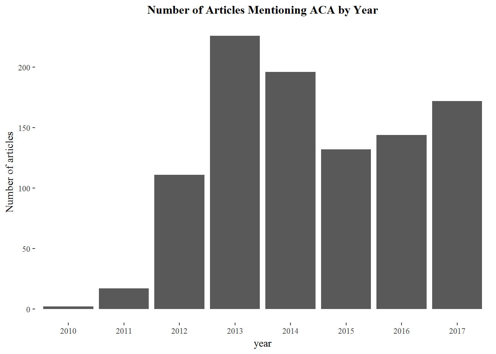
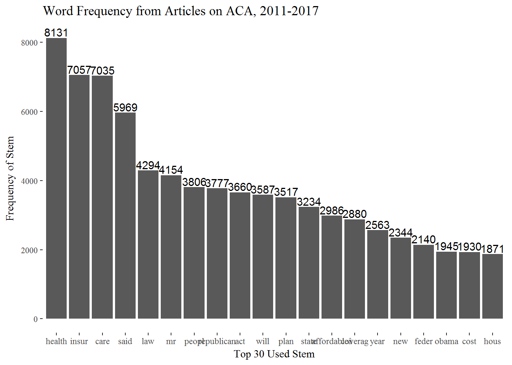
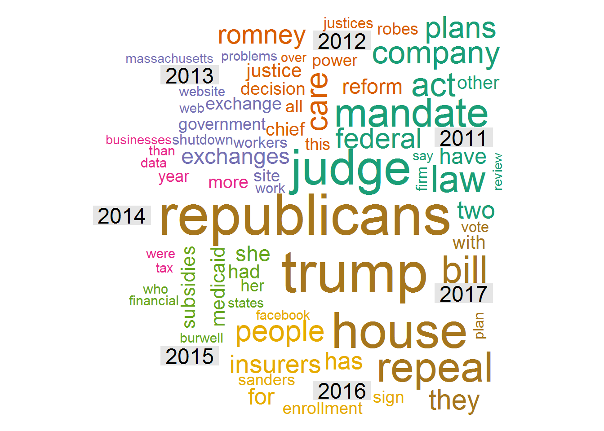

We are also interested in how people think about Affordable care act(ACA). We want to have a look of the tweets and newspaper related to ACA. To realize this, we use API to download articles realted to ACA on New york times from 2011-2017 and transform them into corpus to do the text analysis.
Research Questions: 1) The overll trend of public attention, which can be shown as the number of articles related to ACA in different years. 2) What people discuss about when they discuss ACA, which can be shown as the word frequencies.
We could see that people discussed ACA a lot when obama first signed it, and the election in 2017 made it a hot topic again. And not suprisingly, peopel always talk about Trump when they talk about ACA
Figure 10
We could see that people discussed ACA a lot when Obama first signed it, and the election in 2017 made it a hot topic again. And not suprisingly, people always talk about Trump when they talk about ACA.

Figure 11

Figure 12
